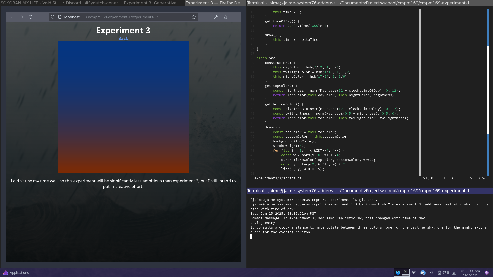
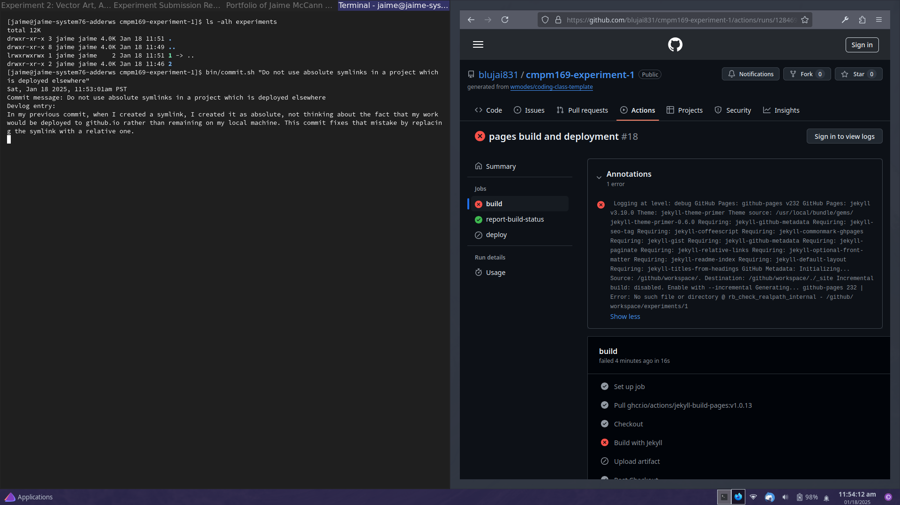

-
Mon, Feb 03 2025, 07:59:47pm PST—Allow user to click and drag to create recurring theremin tracks.
At this point, I'd say we're well into the realm of innovation. Between color/sound synthesthesia, theremins, and clicking to create ripple patterns, none of these are novel concepts, but I don't think they've ever been combined like this.
-
Sun, Feb 02 2025, 11:29:54pm PST—Make ripples larger and louder the longer the user holds the mouse down before releasing it
Again, this is an innovation, but not *that* much of one. It's sort of just the next logical step.
-
Sun, Feb 02 2025, 11:17:03pm PST—Add ripple visual effect when notes play
The barest hints of innovation are starting to creep in. This is not *very* innovative, but it is a little bit, I think.
-
Sun, Feb 02 2025, 10:57:43pm PST—Add echo to musical notes
The way I accomplished this was pretty interesting if I do say so myself. See screenshot.
-
Sun, Feb 02 2025, 10:46:44pm PST—Add a flashing rainbow mouse cursor that schedules musical notes with pitch that depends on color.
I guess this counts as "integrate" since I'm combining my imitation of a Shepard scale with graphics and input principles I'd previously explored.
-
Sun, Feb 02 2025, 09:51:01pm PST—Begin experiment 4 with a Shepard tone double-oscillator.
I'm gonna say this counts as "imitate" because I'm not doing anything with it yet except imitating the Shepard sequence.
-
Mon, Jan 27 2025, 02:02:07pm PST—Reduce object count to accommodate less powerful machines
My laptop borders on kind of chugging trying to run this and my laptop is a gaming laptop. When designing for performance I need to bear in mind that the machine I'm developing on is not a good benchmark.
-
Sun, Jan 26 2025, 09:14:11pm PST—Fix backward articulation of my understanding of what noise is.
It's less uniform, not more uniform.
-
Sun, Jan 26 2025, 09:09:47pm PST—Add explanation of why I'm not using noise functions. Move UI panel above the canvas to keep it closer to the canvas after adding said paragraph.
Note that I understand noise, but intentionally did not use it because I felt uniform randomness was better suited to my purposes. Noise is similar to pseudorandom generation, except intentionally more uniform—but still less uniform than a non-chaotic function—so that its outcomes are highly varied, but also feel "natural" in some way. That is to say, when you use a prewritten noise function, the small but evident correlation of samples between one another is an intrinsic part of what makes the data "noise," and, as such, is the responsibility of that function's implementation—meaning you are at the mercy of the function to give you samples that are already correlated in the specific way you want them correlated. Now, I could just use the type of noise that's correct for my use case, so that I could know the noise function would give me the sort of distribution I want, but I argue that would inherently be a slightly less creative and artistic process than trying to map uniform pseudorandom numbers onto my naive understanding of that distribution, so the latter is what I've chosen to do. To elaborate, if I use prepackaged noise to generate my simulated tree, then I'm generating the definitive simulated tree as defined by that noise function, but to maximize transformativity, I should really be trying to generate my idea of a simulated tree, that follows my weird, made-up, probably incorrect rules.
-
Sun, Jan 26 2025, 08:30:39pm PST—In experiment 3, implement fruit.
Due to a very subtle bug, this likely final step of the process was abolutely infuriating, but it's done now.
-
Sun, Jan 26 2025, 06:44:22pm PST—Add note to experiment 3 requesting the visitor wait until diegetic February before dismissing the simulation.
February is around where the tree normally starts being able to grow autonomously without dying right away.
-
Sun, Jan 26 2025, 06:14:25pm PST—Reflect on my work on experiment 3
I didn't think it would turn out very good since I'd taken all the time I should've been working on it and spent it goofing off instead, but it actually turned out quite nice.
-
Sun, Jan 26 2025, 06:05:19pm PST—When preventing the tree from growing a computationally intractable number of parts, only count branches, not leaves and flowers
This is for two reasons. One: it's not necessary to count leaves and flowers, because they can't grow anything more. Two: it's not advisable to count leaves and flowers, because preventing them from growing leaves the branches that would have grown them more vulnerable to random death. Branches undergoing random death before having ever grown leaves or flowers results in the unintended visual effect of the branches extending and then retracting, and if leaf and flower growth is prevented by the hand of logic and not just random chance, then this unintended visual effect is significantly more pronounced.
-
Sun, Jan 26 2025, 02:28:45pm PST—Add documentation of grow mode and prune mode to experiment 3 webpage
In case how to use these features is not obvious to visitors.
-
Sun, Jan 26 2025, 02:23:44pm PST—Add interactivity to experiment 3 in the form of a grow mode and a prune mode
In grow mode, you can click and drag anywhere and the tree will try to grow in that direction. Manually growing the tree does not make it any less likely to die while it's trying to grow, which is still dependent on season. In prune mode, any branch you click and drag over will die, along with any of its descendant branches.
-
Sun, Jan 26 2025, 01:31:43pm PST—Refactor angle constraint logic in experiment 3

I don't think it was working quite right before. New method constrainAngleUpward should return the upward-facing angle with minimum modulo-2pi difference from the argument. News flash to myself, this is not actually equivalent to stock constrain().
-
Sun, Jan 26 2025, 12:38:44pm PST—Apply overcast color to sky when clouds are onscreen in experiment 3
I didn't feel like having a normal sky color under the clouds felt quite right, especially during weather.
-
Sun, Jan 26 2025, 12:19:20pm PST—Reduce particles for performance
Self-explanatory
-
Sun, Jan 26 2025, 11:43:54am PST—Reduce darkening on tree colors in experiment 3
The tree's colors are darkened relative to the ones specified, so that the tree will stand out against the sky. I decided the tree was being darkened too much and you couldn't really tell what the original colors were, so I reduced the darkening
-
Sun, Jan 26 2025, 11:36:44am PST—Attempt to remove possible directional bias from tree generation
Actually I'm not sure if this did anything
-
Sun, Jan 26 2025, 11:32:33am PST—Add weather to experiment 3
In winter, the weather is snow; else, it's rain. The weather can be active or inactive. It activates and deactivates randomly, with frequency dependent on season. Rain makes branches of the tree die slower, and snow makes them die faster.
-
Sun, Jan 26 2025, 10:42:55am PST—Add clouds to experiment 3
Self-explanatory
-
Sun, Jan 26 2025, 10:01:36am PST—Actually commit changes mentioned in previous commit, which I accidentally didn't add to that commit, and also implement sun and stars into experiment 3
Self-explanatory. At this time the sun and stars have no effect on the tree's growth pattern.
-
Sun, Jan 26 2025, 09:26:45am PST—Slightly adjust month offset of seasons in experiment 3
Adding 1/2 to the month instead of 1 to calculate the current season better aligns the numbers to my code's expectation that the exact index number of each season refers to its middle, not its beginning (e.g. since winter's integer index is 0, a floating-point season value of 0.0 refers to the middle of winter, not the beginning of winter).
-
Sun, Jan 26 2025, 09:11:15am PST—In experiment 3, add a tree that grows and dies at variable rates changing with the season, and a calendar showing what day it is in the simulation.
The tree can flower and sprout leaves. There is also a pure-virtual method for the flowers to bear fruit, but it's unimplemented.
-
Sat, Jan 25 2025, 08:37:22pm PST—In experiment 3, add semi-realistic sky that changes with time of day
It consults a clock instance to interpolate between three colors: one for the daytime sky, one for the night sky, and one for the evening horizon.
-
Sat, Jan 25 2025, 07:28:37pm PST—Create page for experiment 3
I should have gotten started on this much sooner, but I am finally getting started on it, and I intend to do the most I can with the time I've given myself.
-
Mon, Jan 20 2025, 12:38:30pm PST—Add note to experiment 2 mentioning that it has music. Also emphasize the main gist of each explanatory note.
Self-explanatory
-
Mon, Jan 20 2025, 11:57:31am PST—Further clarify experiment 2 instructions
In my previous commit, I didn't specify how to tell if you've successfully clicked the button, and I didn't specify that you have to actually *die* after getting 7 buttons on screen at once because then the last music track kicks in. In this commit I've fixed both these issues.
-
Mon, Jan 20 2025, 11:52:31am PST—Add explanatory note to experiment 5 to try to ensure players don't assume they've seen everything there is to see after only clicking the button once or twice
Self-explanatory
-
Mon, Jan 20 2025, 11:29:52am PST—Fix lag in experiment 2 caused by audio loop problems
The problem was that on each iteration of the overall bgm loop, I was synchronously scheduling a large amount of audio events *at* exactly the same time (which was still a problem even though they were scheduled *for* different times). I now schedule them asynchronously with a 1ms scheduling delay. In theory, this means I can't safely have a bgm track that starts with a note shorter than 1ms times the number of notes in the track. In practice, that's fine, I don't have any tracks like that anyway.
-
Mon, Jan 20 2025, 10:37:17am PST—In experiment 2, add kickin' triangle synth track that starts when you get a gameover with at least 30 points
This is what the song was missing.
-
Mon, Jan 20 2025, 08:34:31am PST—Expand on music in experiment 2
I made the music longer
-
Mon, Jan 20 2025, 12:02:23am PST—Bandaid-fix occasional audio-related crash when firing two bullets at the exact same time
It's midnight. I don't have time to fix this the right way, and actually, I'm not even sure there is a right way to fix this. I think it falls into the category of things that shouldn't be errors in the first place. Nonetheless, here's an approach that will at least keep the error from crashing the game.
-
Sun, Jan 19 2025, 11:36:52pm PST—Add music to experiment 2
This music is an original composition, as should be obvious from its simplicity. I wanted to do more with it, but ran out of time; it's currently less than 25 minutes until this assignment will be considered late.
-
Sun, Jan 19 2025, 10:02:50pm PST—Fix some misuses of tonejs in experiment 2
Confusing bugs
-
Sun, Jan 19 2025, 09:52:21pm PST—Add audio to experiment 2.

The reason I'm using tonejs is because, if I have time, I also want to add synced multitrack music.
-
Sun, Jan 19 2025, 10:40:16am PST—In experiment 2, add recommendation to play using an external mouse

This game is really hard with a touchpad, as I'm discovering by necessity because my uncle has commandeered the room for the day and I have to relocate my laptop.
-
Sun, Jan 19 2025, 08:53:59am PST—In experiment 2, make it look more like the buttons are trying to click you
I made the bullets look like arrows and clarified the first taunt.
-
Sun, Jan 19 2025, 08:34:41am PST—Add fading rainbow background to experiment 2 as pre-hype

This background kicks in when you hit the first milestone, as a prelude to the madness that starts happening with the second.
-
Sun, Jan 19 2025, 08:19:59am PST—Fine tune difficulty of experiment 2

Decreased avoid margin and increased shoot margin.
-
Sat, Jan 18 2025, 09:34:41pm PST—Make button state messages less overtly violent

Overt violence no longer really fits the tone of the game. At first the joke was supposed to be "well if it hurts you, why did you tell me to do it" "well I didn't think you'd actually be able to catch me!" but when you keep doing it long after that point, it's not really funny anymore, just slightly sadistic. I also think these alternative button state messages better fit the overall competitive-spirit-type narrative tone of the game.
-
Sat, Jan 18 2025, 09:01:36pm PST—In experiment 2, add a cool background that kicks in when you progress far enough to activate the second taunt. Also, change taunt font and color. Also, fix bug that can result from two actors trying to change the scene in the same update cycle.
I feel this background adds a lot to the vector art aspect of the experiment, and is also mathematically interesting. How it works is, if you take each vertex of the background and lay their coordinates flat one after the other, so you get a list of plain numbers x1, y1, x2, y2, x3, y3, etc, then each of those numbers is used as the rate of change for the next one -- modularly, so that the first number is used as the rate of change for the last number.
-
Sat, Jan 18 2025, 08:15:02pm PST—In experiment 2, abstract actor list management into Scene class.

This will allow me to manage multiple layers of actor lists, and is all-around more elegant.
-
Sat, Jan 18 2025, 07:37:50pm PST—Make various QOL adjustments to experiment 2

Measure score by clicks dealt, not buttons successfully dismissed. Slightly increase radius of safety bubble around buttons (region where they will not shoot if you're already too close). Add another taunt.
-
Sat, Jan 18 2025, 06:57:08pm PST—Fix lingering absolute same-origin link in experiment 2's index.html

Back button pointed to /, which is not actually docroot. Fixed to point to ../..
-
Sat, Jan 18 2025, 06:55:06pm PST—In experiment 2, add taunt that scrolls by when buttons gain the ability to shoot
I thought it could use a visual indicator, plus a bit more personality.
-
Sat, Jan 18 2025, 06:30:09pm PST—In experiment 2, cache actors to despawn and then despawn them after iteration, instead of immediately

Removing elements from a serial container you're in the middle of iterating over is bad
-
Sat, Jan 18 2025, 06:22:52pm PST—Funnier game-over message for experiment 2

Self-explanatory.
-
Sat, Jan 18 2025, 06:19:34pm PST—In experiment 2, require actual click and drag to grab the buttons, not just drag

Found I was able to cheese the game by clicking anywhere and dragging over the buttons to scoop them up. Fixed by requiring the initial click of a click and drag to occur while hovering the button.
-
Sat, Jan 18 2025, 06:09:03pm PST—Add play again button to experiment 2

User can now reset the sketch after defeat.
-
Sat, Jan 18 2025, 05:49:01pm PST—Add shmup combat to experiment 2

Now the click here buttons try to shoot your mouse. If they get you, the game ends. Now *this* is innovation!
-
Sat, Jan 18 2025, 05:03:37pm PST—Make defeated buttons in experiment 2 split into smaller pieces like Russian nesting dolls

I think this update qualifies as "innovate." Now we're getting silly.
-
Sat, Jan 18 2025, 04:23:23pm PST—Implement experiment 2 as a catch-the-button game.
The button says "Click Here," inviting you to click it, but it runs away from you. Once you've clicked it 5 times, you win. This isn't really a novel concept, but I did implement it in p5js, which is new to me, and the irony of having the runaway object be a button that says "Click Here" is somewhat novel, even though neither click-the-runaway-object games nor buttons that say "Click Here" are novel in and of themselves. Therefore, I'd say this counts as part of the "integrate" step.
-
Sat, Jan 18 2025, 03:30:26pm PST—Use black background for experiment 2

Changed my mind about the background color
-
Sat, Jan 18 2025, 03:27:36pm PST—Use relative URI for stylesheet link in experiment 2
Missed one
-
Sat, Jan 18 2025, 03:24:05pm PST—Edit bin/toggle-local-server.sh to serve from .. instead of .
Per previous devlog entry, this makes it so I'll never forget that my webroot is actually the parent directory of where I expect it to be.
-
Sat, Jan 18 2025, 03:20:08pm PST—Convert all same-origin absolute URIs to relative

I forgot github.io has this issue where you can never use any absolute same-origin URIs anywhere if you want your static site to work both on your local machine and on github.io, because on github.io the static site will have a prefix to it. Actually, I should adjust my toggle-local-server.sh to take this into account by serving from the parent directory instead.
-
Sat, Jan 18 2025, 03:14:20pm PST—Add p5js as library. Create empty p5js sketch as experiment 2.

I downloaded p5js to /lib/p5.min.js and setup a blank template for experiment 2. I think this counts as being part of the "imitate" step: I'm imitating the default sketch code in the p5js web editor.
-
Sat, Jan 18 2025, 12:02:41pm PST—Replace symlink with JS redirect because Jekyll can't into cyclic graphs

You'd think a professionally used tool like this would be developed with some basic insight like how to use a visited set to traverse a cyclic graph without entering an infinite loop, but apparently not.
-
Sat, Jan 18 2025, 11:53:01am PST—Do not use absolute symlinks in a project which is deployed elsewhere
In my previous commit, when I created a symlink, I created it as absolute, not thinking about the fact that my work would be deployed to github.io rather than remaining on my local machine. This commit fixes that mistake by replacing the symlink with a relative one.
-
Sat, Jan 18 2025, 11:48:05am PST—Create experiments directory and symlink / as /experiments/1.

I'm about to start working on experiment 2, so I once again have need for an experiments directory after all. I feel the structure of the experiments directory should reflect that experiment 1 exists, even though experiment 1 is the whole personal website. Therefore, I've symlinked the doc root as experiment 1 in the experiments directory.
-
Fri, Jan 17 2025, 05:54:57pm PST—Explain commit accidentally created without bin/commit.sh (delete all currently extraneous files, edit index.html to reflect this)
I don't have an experiment 2 or 3 yet, nor am I yet using per-page stylesheets nor homepage javascript, so all of those are gone for now. Experiment 1 is made no longer a link, to reflect that my homepage was my experiment 1. I already committed these changes, but forgot to do it through bin/commit.sh, so I'm now using bin/commit.sh to document it.
-
Wed, Jan 15 2025, 05:59:08pm PST—In toggle-local-server.sh, use stderr and failure exit status if something goes wrong, and also be able to handle situations where server process was killed by some other means than our script (e.g. shutdown).
Explanation same as title.
-
Tue, Jan 14 2025, 09:49:20am PST—Modified commit.sh to allow for supplying the commit message in the argv.
At one point, while I was working on experiment 1, I accidentally specified my commit message as an argument to my script instead of as the first line of input to it. I realized this was a perfectly reasonable and intuitive way of doing things and there was no reason for my script not to support it.
-
Mon, Jan 13 2025, 10:35:21pm PST—Add images to game links.

I think this falls under fair use?
It's hard to think of innovative things to do with a static webpage when it's too close to the due time to delve into JS and your senile grandpa is shouting the house down.
-
Mon, Jan 13 2025, 09:53:58pm PST—Update README.md

I replaced the provided README.md with an accurate description of this repository. The original was for the template itself, not for repositories created from it.
-
Mon, Jan 13 2025, 09:48:18pm PST—Change HTML to use new confidence-list class. I had done this before, but forgotten to include index.html in the commit.

What it says in the title.
-
Mon, Jan 13 2025, 09:41:12pm PST—Add background image from a digital painting I did awhile back.
I made this digital painting specifically as a website banner, actually, but for a different personal website. I'm reusing it here because I need some spice and I really like it.
-
Mon, Jan 13 2025, 09:22:08pm PST—Style confidence lists in gradient text color starting at green at the top and transitioning to red at the bottom.

I used a few lists in my homepage that were ordered in descending order of confidence. As a visual cue for this, I decided to use CSS to color them with a gradient.
-
Mon, Jan 13 2025, 09:08:27pm PST—Overhaul sitewide stylesheet.
I've started on a basic new sitewide style. This is taking HTML inspired by the HTML we were given, and adding novel CSS to it, so I'd argue it falls under *integration:* combining existing code with a new technique. (The new technique is my stylesheet.)
The style is very basic right now. I'll work on making it a little bit more fun.
-
Mon, Jan 13 2025, 08:40:05pm PST—Upload logo.svg. Delete toggle-local-server.sh from original location in repo root.
Just some loose changes I missed earlier.
-
Mon, Jan 13 2025, 08:27:53pm PST—Overhaul index.html to personal tastes

I overhauled the website homepage to suit my personal tastes in webdev. I consulted the original the whole time, so I'd say this counts as imitation.
I don't like including JavaScript needlessly in a page, so I removed the script tag for now. I'm sure I can do something interesting with it later, and I'm sure that was the point of it being in there in the first place, so it will probably be back.
I filled out some of my personal details.
I made significant changes to the semantic structure of the page. Where possible, I prefer to make semantic use of elements rather than semantic use of id and class names. I realize it's not a popular opinion these days, and there's probably a good reason for that that I don't fully understand, but, well, as long as I don't understand it...
I decided to use only one stylesheet for the homepage. Rather than putting style rules that should *only* apply to the homepage in a separate stylesheet, I'll try as much as possible to avoid *having* style rules that should only apply to the homepage, and override exceptions in page-specific stylesheets for other pages. On further consideration, this is probably an inferior way of doing things than was setup to begin with, but I don't know, it's just more agreeable to my sensibilities. I just feel like the homepage stylesheet and the sitewide stylesheet should be one and the same.
I moved the nav into the header instead of having it off to the side. Personal preference.
To keep my devlog entries fairly discrete, I'm not yet overhauling the stylesheet. I'll do that next.
-
Mon, Jan 13 2025, 06:54:58pm PST—In bin/commit.sh, try to ensure whole devlog entry is printed back before taking a screenshot
In my first bin/commit.sh-generated commit, the screenshot only included as much of my devlog entry as could fit on one line of my terminal. I assume this is because scrot started before cat had technically finished, so I added a 0.1-second delay to try to address this.
-
Mon, Jan 13 2025, 06:51:07pm PST—Create bin/commit.sh to automatically maintain devlog page

I wrote a script to maintain a devlog page for me. By this means I can easily fulfill the technical requirements of the imitate/innovate/integrate assignment instructions, namely to document my changes and include screenshots, so I can hopefully put a lot more of my focus toward *making* the changes.
{kind=link}
{kind=link}
{kind=link}
{kind=link}
{kind=link}
{kind=link}
{kind=link}
{kind=link}
{kind=link}
{kind=link}
{kind=link}
{kind=link}
{kind=link}
{kind=link}
{kind=link}
{kind=link}
{kind=link}
{kind=link}
{kind=link}
{kind=link}
{kind=link}
{kind=link}
{kind=link}
{kind=link}
{kind=link}
{kind=link}
{kind=link}
{kind=link}
{kind=link}
{kind=link}
{kind=link}
{kind=link}
{kind=link}
{kind=link}
{kind=link}
{kind=link}
{kind=link}
{kind=link}
{kind=link}
{kind=link}
{kind=link}
{kind=link}
{kind=link}
{kind=link}
{kind=link}
{kind=link}
{kind=link}
{kind=link}
{kind=link}